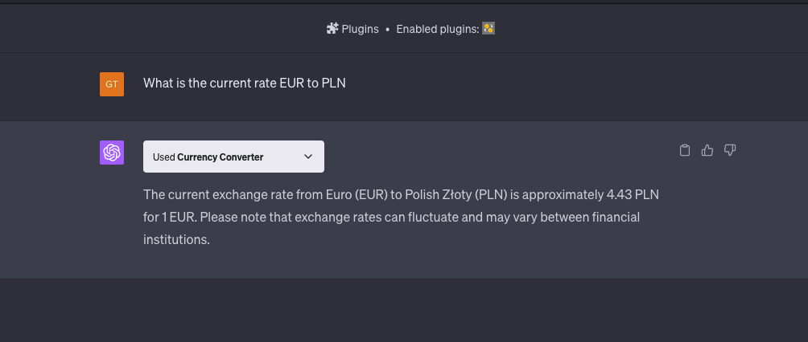

ChatGPT Plugins
What are ChatGPT plugins?
- "Portal" to another services.
- ChatGPT doesn't have access to most recent or private data.
- E.g. currency exchange rates, weather.
Requirements to use plugins
- ChatGPT v4
- If you want to develop your own plugin you need to enroll to a program.
- https://openai.com/blog/chatgpt-plugins
Currency Rate
How does it know which plugin to use?
Let's ask ChatGPT

Steps to create your plugin
- You need an API.
- Your API needs to be described using openapi specification.
- You need to create a manifest file that will describe your app.
- Last step is to register your plugin in ChatGPT UI.
- DOCS
My ChatGPT plugin
- I wanted to play around with this out of curiosity.
- I thought that it might be useful and simple to develop ZIP plugin
- ZIP plugin is capable of creating a zip from files generated by chat.
What plugin could do for Adverity
- Generate entities (e.g. enrichments) using chat interface.
- You tell chat how you want your data to be transformed and it uses adverity API to generate it.
- It could be as simple as chat giving JSON with config that user could paste inside Adverity app.